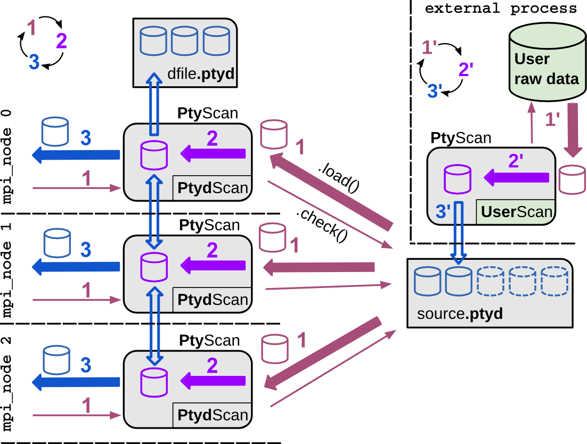

Data management¶
Note
In this chapter, We refer to the raw input data with data and not
to data stored in memory of the computer by Storage instances.
With the term preparation we refer to all data processing
steps prior to the reconstruction and avoid the ambiguous term
processing although it may be more familiar to the reader.
Consider the following generic steps which every ptychographer has to complete prior to a successful image reconstruction.
- (A) Conducting a scanning diffraction experiment.
- While or after the experiment is performed, the researcher is left with raw images acquired from the detector and meta data which, in general, consists of scanning positions along with geometric information about the setup, e.g. photon energy, propagation distance, detector pixel size etc.
- (B) Preparing the data.
In this step, the user performs a subset of the following actions
- select the appropriate region of the detector where the scattering events were counted,
- apply possible pixel corrections to convert the detector counts of the chosen diffraction frame into photon counts, e.g. flat-field and dark-field correction,
- switch image orientation to match with the coordinate system of the reconstruction algorithms,
- assign a suited mask to exclude invalid pixel data (hot or dead pixel, overexposure),
- and/or simply rebin the data.
Finally the user needs to zip the diffraction frames together with the scanning positions.
- (C) Saving the processed data or feed the data into recontruction process.
- In this step the user needs to save the data in a suitable format or provide the data directly for the reconstruction engine.
Data management in PtyPy deals with (B) and (C) as a ptychography
reconstruction software naturally cannot provide actual experimental
data. Nevertheless, the treatment of raw data is usually very similar for
every experiment. Consequently, PtyPy provides an abstract base class,
called PtyScan, which aims to help with steps (B) and (C). In order
to adapt PtyPy for a specific experimental setup, we simply
subclass PtyScan and reimplement only that subset of its methods which are
affected by the specifics of the experiemental setup
(see Tutorial : Subclassing PtyScan).
The PtyScan class¶
PtyScan is the abstract base class in PtyPy that manages raw input
data.
A PtyScan instance is constructed from a set of generic parameters,
see scan.data in the ptypy parameter tree.
It provides the following features:
- Parallelization
- When PtyPy is run across several MPI processes, PtyScan takes care of
distributing the scan-point indices among processes such that each
process only loads the data it will later use in the reconstruction.
Hence, the load on the network is not affected by the number of
processes.
The parallel behavior of
PtyScan, is controlled by the parameterscan.data.load_parallel. It uses theLoadManager - Preparation
PtyScan can handle a few of the raw processing steps mentioned above.
- Selection a region-of-interest from the raw detector image. This
selection is controlled by the parameters
scan.data.auto_center, andscan.data.shapeandscan.data.center. - Switching of orientation and rebinning are controlled by
scan.data.orientationandscan.data.rebin. - Finding a suitable mask or weight for pixel correction is left
to the user, as this is a setup-specific implementation.
See
load_weight(),load_common(),load()andcorrect()for detailed explanations.
- Selection a region-of-interest from the raw detector image. This
selection is controlled by the parameters
- Packaging
PtyScan packs the prepared data together with the used scan point indices, scan positions and a weight (=mask) and geometric meta information. This package is requested by the managing instance
ModelManageron the callnew_data().Because data acquisition and preparation can happen during a reconstruction process, it is possible to specify the minimum number of data frames passed to each process on a new_data() by setting the value of
scan.data.min_frames. The total number of frames processed for a scan is set byscan.data.num_frames.If not extracted from other files, the user may set the photon energy with
scan.data.energy, the propagation distance from sample to detector withscan.data.distanceand the detector pixel size withscan.data.psize.- Storage
PtyScan and its subclass are capable of storing the data in an hfd5-compatible [HDF] file format. The data file names have a custom suffix:
.ptyd.A detailed overview of the .ptyd data file tree is given below in the section Ptyd file format
The parameters
scan.data.saveandscan.data.chunk_formatcontrol the way PtyScan saves the processed data.Note
Although h5py [h5py] supports parallel write, this feature is not used in ptypy. At the moment, all mpi nodes send their prepared data to the master node which writes the date to a file.
Usage scenarios¶
The PtyScan class of PtyPy provides support for three use cases.
Beamline integreted use.
In this use case, the researcher has integrated PtyPy into the beamline end-station or experimental setup with the help of a custom subclass of
PtyScanthat we callUserScan. This subclass has its own methods to extract many of the of the generic parameters ofscan.dataand also defaults for specific custom parameters, for instance file paths or file name patterns (for a detailed introduction on how to subclass PtyScan, see Tutorial : Subclassing PtyScan). Once the experiment is completed, the researcher can initiate a reconstruction directly from raw data with a standard reconstruction script.
Fig. 20 Integrated use case of
PtyScan.¶A custom subclassUserScanserves as a translator between PtyPy‘s generic parameters and data types and the raw image data and meta data from the experiment. Typically the experiment has to be completed before a reconstruction is started, but with some effort it is even possible to have the reconstruction start immediately after acquisition of the first frame. As data preparation is blended in with the reconstruction process, the reconstruction holds when new data is prepared. Optionally, the prepared data is saved to a.ptydfile to avoid having to run the preparation steps for subsequent reconstruction runs.
Post preparation use.
In this use case, the experiment is long passed and the researcher has either used custom subclass of PtyScan or any other script that generates a compatible .hdf5 file (see here) to save prepared data of that experiment. Reconstruction is supposed to work when passing the data file path in the parameter tree.
Only the input file path needs to be passed either with
sourceor withdfilewhensourcetakes the value'file'. In that latter case, secondary processing and saving to another file is not supported, while it is allowed in the first case. While the latter case seems infavorable due to the lack of secondary preparation options, it is meant as a user-friendly transition switch from the first reconstruction at the experiment to post-experiment analysis. Only thesourceparameter needs to be altered in script from<..>.data.source=<recipe>to<..>.data.source='file'while the rest of the parameters are ignored and may remain untouched.
Fig. 21 Standard supported use case of
PtyScan.¶If a structure-compatible (see Ptyd file format)*.hdf5-file is available, PtyPy can be used without customizing a subclass ofPtyScan. It will use the shipped subclassPtydScanto read in the (prepared) raw data.
Preparation and reconstruction on-the-fly with data acquisition.
This use case is for even tighter beamline integration and on-the-fly scans. The researcher has mastered a suitable subclass
UserScanto prepare data from the setup. Now, the preparation happens in a separate process while image frames are acquired. This process runs a python script where the subclassUserScanprepares the data using theauto()method. Thesaveparameter is set to ‘link’ in order to create a separate file for each data chunk and to avoid write access on the source file. The chunk files are linked back into the main source.ptydfile.All reconstruction processes may access the prepared data without overhead or notable pauses in the reconstruction. For PtyPy there is no difference if compared to a single source file (a feature of [HDF]).
Fig. 22 On-the-fly or demon-like use case of
PtyScan.¶A separate process prepares the data chunks and saves them in separate files which are linked back into the source data file. This process may run silently as a ‘’demon’’ in the background. Reconstructions can start immediately and run without delays or pauses due to data preparation.
{kind=link}
Ptyd file format¶
Ptypy uses the python module h5py [h5py] to store and load data in the Hierarchical Data Format [HDF] . HDF resembles very much a directory/file tree of today’s operating systems, while the “files” are (multidimensonial) datasets.
Ptypy stores and loads the (processed) experimental data in a file with extension
.ptyd, which is a hdf5-file with a data tree of very simple nature.
Comparable to tagged image file formats like .edf or .tiff, the ptyd data file seperates
meta information (stored in meta/) from the actual data payload
(stored in chunks/). A schematic overview of the data tree is depicted below.
*.ptyd/
meta/
[general parameters; optional but very useful]
version : str
num_frames : int
label : str
[geometric porameters; all optional]
shape : int or (int,int)
energy : float, optional
distance : float, optional
center : (float,float) or None, optional
psize : float or (float,float), optional
propagation : "farfield" or "nearfield", optional
...
chunks/
0/
data : array(M,N,N) of float
indices : array(M) of int, optional
positions : array(M ,2) of float
weights : same shape as data or empty
1/
...
2/
...
...
All parameters of meta/ are a subset of scan.data.
Omitting any of these parameters or setting the value of the dataset to
'None' has the same effect.
The first set of parameters
version : str
num_frames : int
label : str
are general (optional) parameters.
versionis ptypy version this dataset was prepared with (current version is 0.3.0.dev9dbec08, seeversion).labelis a custom user label. Choose a unique label to your liking.num_framesindicates how many diffraction image frames are expected in the dataset (seenum_frames) It is important to set this parameter when the data acquisition is not finished but the reconstruction has already started. If the dataset is complete, the loading classPtydScanretrieves the total number of frames from the payloadchunks/
The next set of optional parameters are
shape : int or (int,int)
energy : float
distance : float
center : (float,float)
psize : float or (float,float)
propagation : "farfield" or "nearfield"
which refer to the experimental scanning geometry.
shape(seescan.data.shape)energy(seescan.data.energyorscan.geometry.energy)distance(seescan.data.distance)center: (float,float) (seescan.data.center)psize: float or (float,float) (seescan.data.psize)propagation: “farfield” or “nearfield” (seescan.data.propagation)
Finally these parameters will be digested by the
geometry module in order to provide a suited propagator.
Note
As you may have already noted, there are three ways to specify the geometry of the experiment.
bla
As walking the data tree and extracting the data from the hdf5 file
is a bit cumbersome with h5py, there are a few convenience function in the
ptypy.io.h5rw module.
Tutorial : Subclassing PtyScan¶
Note
This tutorial was generated from the python source
[ptypy_root]/tutorial/subclassptyscan.py using ptypy/doc/script2rst.py.
You are encouraged to modify the parameters and rerun the tutorial with:
$ python [ptypy_root]/tutorial/subclassptyscan.py
In this tutorial, we learn how to subclass PtyScan to make
ptypy work with any experimental setup.
This tutorial can be used as a direct follow-up to Tutorial: Modeling the experiment - Pod, Geometry if section Storing the simulation was completed
Again, the imports first.
>>> import numpy as np
>>> from ptypy.core.data import PtyScan
>>> from ptypy import utils as u
For this tutorial we assume that the data and meta information is in this path:
>>> save_path = '/tmp/ptypy/sim/'
Furthermore, we assume that a file about the experimental geometry is located at
>>> geofilepath = save_path + 'geometry.txt'
>>> print(geofilepath)
/tmp/ptypy/sim/geometry.txt
and has contents of the following form
>>> print(''.join([line for line in open(geofilepath, 'r')]))
distance 1.5000e-01
energy 2.3305e-03
psize 2.4000e-05
shape 256
The scanning positions are in
>>> positionpath = save_path + 'positions.txt'
>>> print(positionpath)
/tmp/ptypy/sim/positions.txt
with a list of positions for vertical and horizontanl movement and the image frame from the “camera”
>>> print(''.join([line for line in open(positionpath, 'r')][:6])+'....')
ccd/diffraction_0000.npy 0.0000e+00 0.0000e+00
ccd/diffraction_0001.npy 0.0000e+00 4.1562e-04
ccd/diffraction_0002.npy 3.9528e-04 1.2844e-04
ccd/diffraction_0003.npy 2.4430e-04 -3.3625e-04
ccd/diffraction_0004.npy -2.4430e-04 -3.3625e-04
ccd/diffraction_0005.npy -3.9528e-04 1.2844e-04
....
Writing a subclass¶
The simplest subclass of PtyScan would look like this
>>> class NumpyScan(PtyScan):
>>> """
>>> A PtyScan subclass to extract data from a numpy array.
>>> """
>>>
>>> def __init__(self, pars=None, **kwargs):
>>> # In init we need to call the parent.
>>> super(NumpyScan, self).__init__(pars, **kwargs)
>>>
Of course this class does nothing special beyond PtyScan. As it is, the class also cannot be used as a real PtyScan instance because its defaults are not properly managed. For this, Ptypy provides a powerful self-documenting tool call a “descriptor” which can be applied to any new class using a decorator. The tree of all valid ptypy parameters is located at here. To manage the default parameters of our subclass and document its existence, we would need to write
>>> from ptypy import defaults_tree
>>> @defaults_tree.parse_doc('scandata.numpyscan')
>>> class NumpyScan(PtyScan):
>>> """
>>> A PtyScan subclass to extract data from a numpy array.
>>> """
>>>
>>> def __init__(self, pars=None, **kwargs):
>>> # In init we need to call the parent.
>>> super(NumpyScan, self).__init__(pars, **kwargs)
>>>
The decorator extracts information from the docstring of the subclass and parent classes about the expected input parameters. Currently the docstring of NumpyScan does not contain anything special, thus the only parameters registered are those of the parent class, PtyScan:
>>> print(defaults_tree['scandata.numpyscan'].to_string())
[name]
help =
default = PtyScan
type = str
[dfile]
help = Prepared data file path
default = None
doc = If source was ``None`` or ``'file'``, data will be loaded from this file and processing as
well as saving is deactivated. If source is the name of an experiment recipe or path to a
file, data will be saved to this file
userlevel = 0
type = file
[chunk_format]
help = Appendix to saved files if save == 'link'
default = .chunk%02d
doc =
userlevel = 2
type = str
[save]
help = Saving mode
default = None
doc = Mode to use to save data to file.
<newline>
- ``None``: No saving
- ``'merge'``: attemts to merge data in single chunk **[not implemented]**
- ``'append'``: appends each chunk in master \*.ptyd file
- ``'link'``: appends external links in master \*.ptyd file and stores chunks separately
<newline>
in the path given by the link. Links file paths are relative to master file.
userlevel = 1
type = str
[auto_center]
help = Determine if center in data is calculated automatically
default = None
doc =
- ``False``, no automatic centering
- ``None``, only if :py:data:`center` is ``None``
- ``True``, it will be enforced
userlevel = 0
type = bool
[load_parallel]
help = Determines what will be loaded in parallel
default = data
doc = Choose from ``None``, ``'data'``, ``'common'``, ``'all'``
type = str
[rebin]
lowlim = 1
help = Rebinning factor
default = None
doc = Rebinning factor for the raw data frames. ``'None'`` or ``1`` both mean *no binning*
uplim = 8
userlevel = 1
type = int
[orientation]
help = Data frame orientation
default = None
doc = Choose
<newline>
- ``None`` or ``0``: correct orientation
- ``1``: invert columns (numpy.flip_lr)
- ``2``: invert rows (numpy.flip_ud)
- ``3``: invert columns, invert rows
- ``4``: transpose (numpy.transpose)
- ``4+i``: tranpose + other operations from above
<newline>
Alternatively, a 3-tuple of booleans may be provided ``(do_transpose,
do_flipud, do_fliplr)``
userlevel = 1
type = int, tuple, list
[min_frames]
help = Minimum number of frames loaded by each node
default = 1
doc =
userlevel = 2
type = int
[positions_theory]
help = Theoretical positions for this scan
default = None
doc = If provided, experimental positions from :py:class:`PtyScan` subclass will be ignored. If data
preparation is called from Ptycho instance, the calculated positions from the
:py:func:`ptypy.core.xy.from_pars` dict will be inserted here
userlevel = 2
type = ndarray
[num_frames]
help = Maximum number of frames to be prepared
default = None
doc = If `positions_theory` are provided, num_frames will be ovverriden with the number of
positions available
userlevel = 1
type = int
[label]
help = The scan label
default = None
doc = Unique string identifying the scan
userlevel = 1
type = str
[experimentID]
help = Name of the experiment
default = None
doc = If None, a default value will be provided by the recipe. **unused**
userlevel = 2
type = str
[version]
help = TODO: Explain this and decide if it is a user parameter.
default = 0.1
doc =
userlevel = 2
type = float
[shape]
help = Shape of the region of interest cropped from the raw data.
default = 256
doc = Cropping dimension of the diffraction frame
Can be None, (dimx, dimy), or dim. In the latter case shape will be (dim, dim).
userlevel = 1
type = int, tuple
[center]
help = Center (pixel) of the optical axes in raw data
default = 'fftshift'
doc = If ``None``, this parameter will be set by :py:data:`~.scan.data.auto_center` or elsewhere
userlevel = 1
type = tuple, str
[psize]
lowlim = 0
help = Detector pixel size
default = 0.000172
doc = Dimensions of the detector pixels (in meters)
userlevel = 0
type = float, tuple
[distance]
lowlim = 0
help = Sample to detector distance
default = 7.19
doc = In meters.
userlevel = 0
type = float
[energy]
lowlim = 0
help = Photon energy of the incident radiation in keV
default = 7.2
doc =
userlevel = 0
type = float
[add_poisson_noise]
help = Decides whether the scan should have poisson noise or not
default = True
type = bool
As you can see, there are already many parameters documented in PtyScan‘s class. For each parameter, most important are the type, default value and help string. The decorator does more than collect this information: it also generates from it a class variable called DEFAULT, which stores all defaults:
>>> print(u.verbose.report(NumpyScan.DEFAULT, noheader=True))
* id3VRD9IGECG : ptypy.utils.parameters.Param(20)
* auto_center : None
* positions_theory : None
* dfile : None
* name : PtyScan
* num_frames : None
* min_frames : 1
* center : fftshift
* chunk_format : .chunk%02d
* label : None
* experimentID : None
* load_parallel : data
* shape : 256
* rebin : None
* psize : 0.000172
* version : 0.1
* add_poisson_noise : True
* save : None
* distance : 7.19
* energy : 7.2
* orientation : None
Now we are ready to add functionality to our subclass.
A first step of initialisation would be to retrieve
the geometric information that we stored in geofilepath and update
the input parameters with it.
We write a tiny file parser.
>>> def extract_geo(base_path):
>>> out = {}
>>> with open(base_path+'geometry.txt') as f:
>>> for line in f:
>>> key, value = line.strip().split()
>>> out[key] = eval(value)
>>> return out
>>>
We test it.
>>> print(extract_geo(save_path))
{'distance': 0.15, 'energy': 0.0023305, 'shape': 256, 'psize': 2.4e-05}
That seems to work. We can integrate this parser into the initialisation as we assume that this small access can be done by all MPI nodes without data access problems. Hence, our subclass becomes
>>> @defaults_tree.parse_doc('scandata.numpyscan')
>>> class NumpyScan(PtyScan):
>>> """
>>> A PtyScan subclass to extract data from a numpy array.
>>>
>>> Defaults:
>>>
>>> [name]
>>> type = str
>>> default = numpyscan
>>> help =
>>>
>>> [base_path]
>>> type = str
>>> default = './'
>>> help = Base path to extract data files from.
>>> """
>>>
>>> def __init__(self, pars=None, **kwargs):
>>> p = self.DEFAULT.copy(depth=2)
>>> p.update(pars)
>>>
>>> with open(p.base_path+'geometry.txt') as f:
>>> for line in f:
>>> key, value = line.strip().split()
>>> # we only replace Nones or missing keys
>>> if p.get(key) is None:
>>> p[key] = eval(value)
>>>
>>> super(NumpyScan, self).__init__(p, **kwargs)
>>>
We now need a new input parameter called base_path, so we documented it in the docstring after the section header “Defaults:”.
>>> print(defaults_tree['scandata.numpyscan.base_path'])
[base_path]
help = Base path to extract data files from.
default = './'
type = str
As you can see, the first step in __init__ is to build a default parameter structure to ensure that all input parameters are available. The next line updates this structure to overwrite the entries specified by the user.
Good! Next, we need to implement how the class finds out about
the positions in the scan. The method
load_positions() can be used
for this purpose.
>>> print(PtyScan.load_positions.__doc__)
**Override in subclass for custom implementation**
*Called in* :py:meth:`initialize`
Loads all positions for all diffraction patterns in this scan.
The positions loaded here will be available by all processes
through the attribute ``self.positions``. If you specify position
on a per frame basis in :py:meth:`load` , this function has no
effect.
If theoretical positions :py:data:`positions_theory` are
provided in the initial parameter set :py:data:`DEFAULT`,
specifying positions here has NO effect and will be ignored.
The purpose of this function is to avoid reloading and parallel
reads on files that may require intense parsing to retrieve the
information, e.g. long SPEC log files. If parallel reads or
log file parsing for each set of frames is not a time critical
issue of the subclass, reimplementing this function can be ignored
and it is recommended to only reimplement the :py:meth:`load`
method.
If `load_parallel` is set to `all` or common`, this function is
executed by all nodes, otherwise the master node executes this
function and broadcasts the results to other nodes.
Returns
-------
positions : ndarray
A (N,2)-array where *N* is the number of positions.
Note
----
Be aware that this method sets attribute :py:attr:`num_frames`
in the following manner.
* If ``num_frames == None`` : ``num_frames = N``.
* If ``num_frames < N`` , no effect.
* If ``num_frames > N`` : ``num_frames = N``.
The parser for the positions file would look like this.
>>> def extract_pos(base_path):
>>> pos = []
>>> files = []
>>> with open(base_path+'positions.txt') as f:
>>> for line in f:
>>> fname, y, x = line.strip().split()
>>> pos.append((eval(y), eval(x)))
>>> files.append(fname)
>>> return files, pos
>>>
And the test:
>>> files, pos = extract_pos(save_path)
>>> print(files[:2])
['ccd/diffraction_0000.npy', 'ccd/diffraction_0001.npy']
>>> print(pos[:2])
[(0.0, 0.0), (0.0, 0.00041562)]
>>> @defaults_tree.parse_doc('scandata.numpyscan')
>>> class NumpyScan(PtyScan):
>>> """
>>> A PtyScan subclass to extract data from a numpy array.
>>>
>>> Defaults:
>>>
>>> [name]
>>> type = str
>>> default = numpyscan
>>> help =
>>>
>>> [base_path]
>>> type = str
>>> default = /tmp/ptypy/sim/
>>> help = Base path to extract data files from.
>>> """
>>>
>>> def __init__(self, pars=None, **kwargs):
>>> p = self.DEFAULT.copy(depth=2)
>>> p.update(pars)
>>>
>>> with open(p.base_path+'geometry.txt') as f:
>>> for line in f:
>>> key, value = line.strip().split()
>>> # we only replace Nones or missing keys
>>> if p.get(key) is None:
>>> p[key] = eval(value)
>>>
>>> super(NumpyScan, self).__init__(p, **kwargs)
>>>
>>> def load_positions(self):
>>> # the base path is now stored in
>>> base_path = self.info.base_path
>>> pos = []
>>> with open(base_path+'positions.txt') as f:
>>> for line in f:
>>> fname, y, x = line.strip().split()
>>> pos.append((eval(y), eval(x)))
>>> files.append(fname)
>>> return np.asarray(pos)
>>>
One nice thing about rewriting self.load_positions is that
the maximum number of frames will be set and we do not need to
manually adapt check()
The last step is to overwrite the actual loading of data.
Loading happens (MPI-compatible) in
load()
>>> print PtyScan.load.__doc__
**Override in subclass for custom implementation**
Loads data according to node specific scanpoint indices that have
been determined by :py:class:`LoadManager` or otherwise.
Returns
-------
raw, positions, weight : dict
Dictionaries whose keys are the given scan point `indices`
and whose values are the respective frame / position according
to the scan point index. `weight` and `positions` may be empty
Note
----
This is the *most* important method to change when subclassing
:py:class:`PtyScan`. Most often it suffices to override the constructor
and this method to create a subclass suited for a specific
experiment.
Load seems a bit more complex than self.load_positions for its
return values. However, we can opt-out of providing weights (masks)
and positions, as we have already adapted self.load_positions
and there were no bad pixels in the (linear) detector
The final subclass looks like this. We overwrite two defaults from PtyScan:
>>> @defaults_tree.parse_doc('scandata.numpyscan')
>>> class NumpyScan(PtyScan):
>>> """
>>> A PtyScan subclass to extract data from a numpy array.
>>>
>>> Defaults:
>>>
>>> [name]
>>> type = str
>>> default = numpyscan
>>> help =
>>>
>>> [base_path]
>>> type = str
>>> default = /tmp/ptypy/sim/
>>> help = Base path to extract data files from.
>>>
>>> [auto_center]
>>> default = False
>>>
>>> [dfile]
>>> default = /tmp/ptypy/sim/npy.ptyd
>>> """
>>>
>>> def __init__(self, pars=None, **kwargs):
>>> p = self.DEFAULT.copy(depth=2)
>>> p.update(pars)
>>>
>>> with open(p.base_path+'geometry.txt') as f:
>>> for line in f:
>>> key, value = line.strip().split()
>>> # we only replace Nones or missing keys
>>> if p.get(key) is None:
>>> p[key] = eval(value)
>>>
>>> super(NumpyScan, self).__init__(p, **kwargs)
>>>
>>> def load_positions(self):
>>> # the base path is now stored in
>>> base_path = self.info.base_path
>>> pos = []
>>> with open(base_path+'positions.txt') as f:
>>> for line in f:
>>> fname, y, x = line.strip().split()
>>> pos.append((eval(y), eval(x)))
>>> files.append(fname)
>>> return np.asarray(pos)
>>>
>>> def load(self, indices):
>>> raw = {}
>>> bp = self.info.base_path
>>> for ii in indices:
>>> raw[ii] = np.load(bp+'ccd/diffraction_%04d.npy' % ii)
>>> return raw, {}, {}
>>>
Loading the data¶
With the subclass we create a scan only using defaults
>>> NPS = NumpyScan()
>>> NPS.initialize()
In order to process the data. We need to call
auto() with the chunk size
as arguments. It returns a data chunk that we can inspect
with ptypy.utils.verbose.report(). The information is
concatenated, but the length of iterables or dicts is always indicated
in parantheses.
>>> print u.verbose.report(NPS.auto(80), noheader=True)
* id3VRD9IG7K8 : dict(2)
* common : ptypy.utils.parameters.Param(8)
* distance : 7.19
* center : [array = [ 128. 128.]]
* num_frames : 116
* energy : 7.2
* psize : [array = [ 0.000172 0.000172]]
* label : None
* shape : [array = [256 256]]
* version : 0.1
* iterable : list(80)
* id3VRD9I5KB8 : dict(4)
* index : 0
* data : [256x256 int32 array]
* mask : [256x256 bool array]
* position : [array = [ 0. 0.]]
* id3VRD9JL4K0 : dict(4)
* index : 1
* data : [256x256 int32 array]
* mask : [256x256 bool array]
* position : [array = [ 0. 0.00041562]]
* id3VRD9IIK2G : dict(4)
* index : 2
* data : [256x256 int32 array]
* mask : [256x256 bool array]
* position : [array = [ 0.00039528 0.00012844]]
* id3VRD9K83BG : dict(4)
* index : 3
* data : [256x256 int32 array]
* mask : [256x256 bool array]
* position : [array = [ 0.0002443 -0.00033625]]
* id3VRD9IJ82G : dict(4)
* index : 4
* data : [256x256 int32 array]
* mask : [256x256 bool array]
* position : [array = [-0.0002443 -0.00033625]]
* ... : ....
>>> print u.verbose.report(NPS.auto(80), noheader=True)
* id3VRD9I568G : dict(2)
* common : ptypy.utils.parameters.Param(8)
* distance : 7.19
* center : [array = [ 128. 128.]]
* num_frames : 116
* energy : 7.2
* psize : [array = [ 0.000172 0.000172]]
* label : None
* shape : [array = [256 256]]
* version : 0.1
* iterable : list(36)
* id3VRD9IJ9VO : dict(4)
* index : 80
* data : [256x256 int32 array]
* mask : [256x256 bool array]
* position : [array = [ 0.0018532 0.0016686]]
* id3VRD9IJ9N0 : dict(4)
* index : 81
* data : [256x256 int32 array]
* mask : [256x256 bool array]
* position : [array = [ 0.0021597 0.0012469]]
* id3VRD9KIEH8 : dict(4)
* index : 82
* data : [256x256 int32 array]
* mask : [256x256 bool array]
* position : [array = [ 0.0023717 0.00077061]]
* id3VRD9IG5VO : dict(4)
* index : 83
* data : [256x256 int32 array]
* mask : [256x256 bool array]
* position : [array = [ 0.0024801 0.00026067]]
* id3VRD9IIFBG : dict(4)
* index : 84
* data : [256x256 int32 array]
* mask : [256x256 bool array]
* position : [array = [ 0.0024801 -0.00026067]]
* ... : ....
We observe the second chunk was not 80 frames deep but 34 as we only had 114 frames of data.
So where is the .ptyd data-file? As default, PtyScan does not actually save data. We have to manually activate it in in the input paramaters.
>>> data = NPS.DEFAULT.copy(depth=2)
>>> data.save = 'append'
>>> NPS = NumpyScan(pars=data)
>>> NPS.initialize()
WARNING root - File /tmp/ptypy/sim/npy.ptyd already exist. Renamed to /tmp/ptypy/sim/npy.ptyd.old.
>>> for i in range(50):
>>> msg = NPS.auto(20)
>>> if msg == NPS.EOS:
>>> break
>>>
We can analyse the saved npy.ptyd with
h5info()
>>> from ptypy.io import h5info
>>> print h5info(NPS.info.dfile)
File created : Mon Oct 8 18:48:37 2018
* chunks [dict 6]:
* 0 [dict 4]:
* data [20x256x256 int32 array]
* indices [list = [0.000000, 1.000000, 2.000000, 3.000000, ...]]
* positions [20x2 float64 array]
* weights [array = []]
* 1 [dict 4]:
* data [20x256x256 int32 array]
* indices [list = [20.000000, 21.000000, 22.000000, 23.000000, ...]]
* positions [20x2 float64 array]
* weights [array = []]
* 2 [dict 4]:
* data [20x256x256 int32 array]
* indices [list = [40.000000, 41.000000, 42.000000, 43.000000, ...]]
* positions [20x2 float64 array]
* weights [array = []]
* 3 [dict 4]:
* data [20x256x256 int32 array]
* indices [list = [60.000000, 61.000000, 62.000000, 63.000000, ...]]
* positions [20x2 float64 array]
* weights [array = []]
* 4 [dict 4]:
* data [20x256x256 int32 array]
* indices [list = [80.000000, 81.000000, 82.000000, 83.000000, ...]]
* positions [20x2 float64 array]
* weights [array = []]
* 5 [dict 4]:
* data [16x256x256 int32 array]
* indices [list = [100.000000, 101.000000, 102.000000, 103.000000, ...]]
* positions [16x2 float64 array]
* weights [array = []]
* info [dict 23]:
* add_poisson_noise [scalar = True]
* auto_center [scalar = False]
* base_path [string = "/tmp/ptypy/sim/"]
* center [array = [ 128. 128.]]
* chunk_format [string = ".chunk%02d"]
* dfile [string = "/tmp/ptypy/sim/npy.ptyd"]
* distance [scalar = 7.19]
* energy [scalar = 7.2]
* experimentID [None]
* label [None]
* load_parallel [string = "data"]
* min_frames [scalar = 1]
* name [string = "numpyscan"]
* num_frames [None]
* orientation [None]
* positions_scan [116x2 float64 array]
* positions_theory [None]
* psize [scalar = 0.000172]
* rebin [scalar = 1]
* save [string = "append"]
* shape [array = [256 256]]
* version [scalar = 0.1]
* weight2d [scalar = True]
* meta [dict 8]:
* center [array = [ 128. 128.]]
* distance [scalar = 7.19]
* energy [scalar = 7.2]
* label [None]
* num_frames [scalar = 116]
* psize [array = [ 0.000172 0.000172]]
* shape [array = [256 256]]
* version [scalar = 0.1]
None
Listing the new subclass¶
In order to make the subclass available in your local PtyPy,
navigate to [ptypy_root]/ptypy/experiment and paste the content
into a new file user.py:
$ touch [ptypy_root]/ptypy/experiment/user.py
Append the following lines into [ptypy_root]/ptypy/experiment.__init__.py:
from user import NumpyScan
PtyScanTypes.update({'numpy':NumpyScan})
Now, your new subclass will be used whenever you pass 'numpy' for
the scan.data.source parameter. All special parameters of the class
should be passed via the dict scan.data.recipe.
| [h5py] | (1, 2) http://www.h5py.org/ |
| [HDF] | (1, 2, 3) Hierarchical Data Format, http://www.hdfgroup.org/HDF5/ |